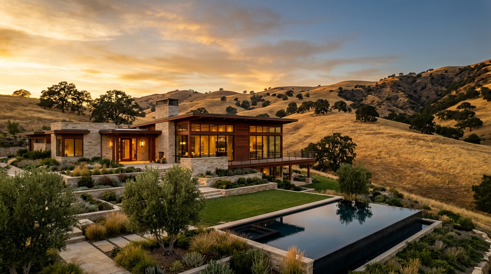

EXPLORE THE NEIGHBORHOODS


Find your corner of Lafayette
PREMIER LUXURY · GATED ESTATES
Happy Valley →
Lafayette's most prestigious address, featuring magnificent custom estates, tennis pavilions, private vineyards, and mature heritage trees.

SECLUDED VALLEY · HORSE COUNTRY
Reliez Valley →
Winding country lanes, peaceful foothills, expansive multi-acre lots, equestrian barns, and direct open space trailheads.
WALK TO TOWN · CHARMING RANCHES
Downtown & Trails →
Mid-century modern homes and renovated ranches minutes from Mt. Diablo Blvd dining, community parks, and the Lafayette-Moraga Regional Trail.
WOODED SLOPES · TOP SCHOOLS
Springhill & Burton Valley →
Beloved family pocket offering top-ranked elementary schools, community swim clubs, and quiet scenic cul-de-sacs.